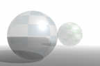
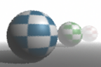
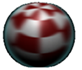

您可能会注意到，渲染图像的环境雾中存在以下问题：
透明曲面的外观不正确

请将环境雾灯光的“环境光明暗处理”(Ambient Shade)设定为 0。
环境雾中出现锯齿型曲面边

执行下列操作之一：
- 为环境雾形状启用“着色采样数覆盖”(Shading Samples Override)。增加“着色采样数”(Shading Samples)和“最大着色采样数”(Max Shading Samples)（增加到生成可接受结果的最小值）。
- 增加“渲染设置”(Render Settings)窗口中的“边缘抗锯齿”(Edge Anti-aliasing)（增加到生成可接受结果的最小设置）。
2D 运动模糊曲面周围的轮廓

执行下列操作之一：
- 移除任何透明对象、雾和/或辉光，并将背景色设定为黑色。渲染场景，然后使用合成软件来合成使用渲染图像移除的元素。
- 在“渲染设置”(Render Settings)窗口中，将“平滑值”(Smooth Value)设定为 0，并启用“颜色”(Color)。
粒状或闪烁环境雾
执行下列操作之一：
- 为环境雾形状启用“着色采样数覆盖”(Shading Samples Override)，并增加“着色采样数”(Shading Samples)和“最大着色采样数”(Max Shading Samples)（增加到生成可接受结果的最小值）。
- 为环境雾形状启用“体积采样数覆盖”(Volume Samples Override)，并增加“体积采样数”(Volume Samples)（增加到生成可接受结果的最小值）。
“环境雾”(Environment Fog)中的断开连接不会删除雾
如果已在“渲染设置”(Render Settings)窗口中启用“环境雾”(Environment Fog)，稍后尝试在“断开连接”(Break Connection)上单击鼠标右键将其禁用，则雾仍将启用。
执行下列操作之一：
在“Hypershade”中查找“环境雾”(Environment Fog)材质，并将其删除。